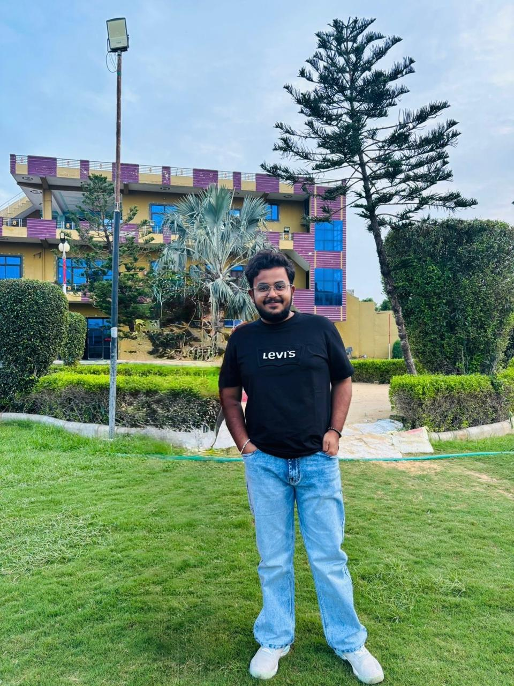

01 / RECON
ENUMO Toolkit
An automated reconnaissance toolkit designed to organise subdomain discovery, service identification, fingerprinting and related assessment workflows.
Reconnaissance · AutomationCybersecurity Researcher · Ethical Hacker · TheCyberAryan
I work across offensive security and digital defence, with an interest in understanding how systems fail, validating security weaknesses responsibly, and turning technical findings into clear, actionable improvements.

Understanding the problem matters as much as finding it. My focus is on evidence, context and practical security outcomes.
I'm Aryan Pareek, also known as TheCyberAryan. My work and learning are centred on cybersecurity, ethical hacking, vulnerability research and the practical security of digital systems.
I enjoy examining applications and infrastructure from an adversarial perspective, documenting what can go wrong, and communicating findings in a way that helps technical teams understand risk and prioritise remediation.
This website brings together selected projects, research, professional background and educational writing. It is intended to be a transparent record of work—not a collection of unsupported claims.
A selection of security-focused projects and experiments. Individual project pages and repositories can be linked here as they are prepared.
An automated reconnaissance toolkit designed to organise subdomain discovery, service identification, fingerprinting and related assessment workflows.
Reconnaissance · AutomationA project focused on helping assess cross-site scripting exposure through structured input analysis and testing workflows.
Web security · XSS testingA path-traversal testing project intended to help identify weaknesses in how applications handle file paths and resource access.
Application security · TestingA machine-learning project exploring the detection of phishing and fraudulent websites using website-related indicators.
Machine learning · DetectionAutomation experiments around Active Directory security assessment workflows and the identification of configuration weaknesses.
Active Directory · AutomationTechnical notes and educational articles explaining security concepts, assessment methodology and responsible vulnerability disclosure.
Knowledge sharing · ResearchA practical mix of assessment, investigation, engineering and communication skills.
Security work rarely sits inside one tool or one discipline. These are the areas represented in my current technical practice and project work.
External features and acknowledgements are listed here when a source can be verified.
Features and acknowledgements will include their original source and context.
Credentials should be easy to verify. Certificate links or credential IDs can be added to each item.
For professional enquiries, research discussions, responsible disclosure coordination or collaboration, send me an email.